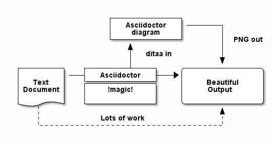
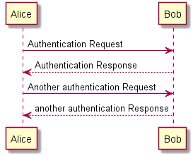

content from src/docs/asciidoc/subdir/_c.adoc.
Example Presentation
Doc Writer <cool.person@apache.org> 2022-03-08 :revnumber: 1.2 :example-caption!:
Introduction
This is a presentation for an example project.
This project does something.
We just haven’t decided what that is yet.
Speaker Notes
Press the s key to access speaker notes.
Blank screen
You can press b or . to blank your current screen.
Hit it again to bring it back.
Overview
Press the esc key to get an overview of your slides.
Attributes
Press the down arrow key to see the next sub-slide.
Attributes Part 1
Built-in
- asciidoctor-version
2.0.10
- safe-mode-name
unsafe
- docdir
D:/batch/mvn/java-1/src/main/asciidoc
- docfile
D:/batch/mvn/java-1/src/main/asciidoc/index.adoc
- imagesdir
images
Attributes Part 2
Custom
- project-version
1.2
- sourcedir
../java
Including documents from subdir
include::subdir/_b.adoc[]
content from src/docs/asciidoc/subdir/_b.adoc.
Example 1. include::_c.adoc[]
Images
Videos
Play videos from Youtube, or locally
Lists
Asciidoctor allows a wide variety of list option.
For details see the documentation starting at: http://asciidoctor.org/docs/user-manual/#unordered-lists
Press the down arrow key to see the some examples.
Unordered List
Protons
Electrons
Neutrons
Ordered List
Protons
Electrons
Neutrons
Nested List
Nest lists, by duplicating the list-char
Protons
Electrons
Neutrons
Tables
| Header A | Header B |
|---|---|
Cell A1 | Cell B1 |
Cell A2 | Cell B2 |
Cell A3 | Cell B3 |
Source Code
Java code from project
public boolean contains(String haystack, String needle) {
return haystack.contains(needle);
}Two columns
Blah
Blah
Blah
Blah
Blah
Blah
Blah
Blah
Blah
Blah
Fontawesome Icons
Diagrams
Press the down arrow key to see the different types of diagrams
Ditaa Diagram

PlantUML Diagram

GraphVIZ Diagram
Failed to generate image: Could not find the 'dot' executable in PATH; add it to the PATH or specify its location using the 'graphvizdot' document attribute
digraph g {
a -> b
b -> c
c -> d
d -> a
}Seqdiag Diagram
Failed to generate image: Could not find the 'seqdiag', 'seqdiag3' executable in PATH; add it to the PATH or specify its location using the 'seqdiag' document attribute
{
A -> B -> C;
B -> D;
}Blockdiag Diagram
Failed to generate image: Could not find the 'blockdiag', 'blockdiag3' executable in PATH; add it to the PATH or specify its location using the 'blockdiag' document attribute
{
A -> B -> C -> D;
A -> E -> F -> G;
}Actdiag Diagram
Failed to generate image: Could not find the 'actdiag', 'actdiag3' executable in PATH; add it to the PATH or specify its location using the 'actdiag' document attribute
{
write -> convert -> image
lane user {
label = "User"
write [label = "Writing reST"];
image [label = "Get diagram IMAGE"];
}
lane actdiag {
convert [label = "Convert reST to Image"];
}
}Nwdiag Diagram
Failed to generate image: Could not find the 'nwdiag', 'nwdiag3' executable in PATH; add it to the PATH or specify its location using the 'nwdiag' document attribute
{
network dmz {
address = "210.x.x.x/24"
web01 [address = "210.x.x.1"];
web02 [address = "210.x.x.2"];
}
network internal {
address = "172.x.x.x/24";
web01 [address = "172.x.x.1"];
web02 [address = "172.x.x.2"];
db01;
db02;
}
}Rackdiag Diagram
Failed to generate image: Could not find the 'rackdiag', 'rackdiag3' executable in PATH; add it to the PATH or specify its location using the 'rackdiag' document attribute
{
// Change order of rack-number as ascending
ascending;
// define height of rack
12U;
// define description of rack
description = "Tokyo/1234 East";
// define rack units
1: UPS [2U]; // define height of unit
3: DB Server [5kg] // define weight of unit
4: Web Server [0.5A] // define ampere of unit
5: Web Server
6: Web Server
7: Load Balancer
8: L3 Switch
}Packetdiag Diagram
Failed to generate image: Could not find the 'packetdiag', 'packetdiag3' executable in PATH; add it to the PATH or specify its location using the 'packetdiag' document attribute
{
colwidth = 32
node_height = 72
0-15: Source Port
16-31: Destination Port
32-63: Sequence Number
64-95: Acknowledgment Number
96-99: Data Offset
100-105: Reserved
106: URG [rotate = 270]
107: ACK [rotate = 270]
108: PSH [rotate = 270]
109: RST [rotate = 270]
110: SYN [rotate = 270]
111: FIN [rotate = 270]
112-127: Window
128-143: Checksum
144-159: Urgent Pointer
160-191: (Options and Padding)
192-223: data [colheight = 3]
}Meme Diagram
Failed to generate image: Could not find the 'identify' executable in PATH; add it to the PATH or specify its location using the 'identify' document attribute
Entity Relation Diagram
Failed to generate image: Could not find the 'erd' executable in PATH; add it to the PATH or specify its location using the 'erd' document attribute [Person] *name height weight +birth_location_id [Location] *id city state country # Cardinality Syntax # 0 or 1 ? # exactly 1 1 # 0 or more * # 1 or more + Person *--1 Location
SVGBob: Mindmap
Failed to generate image: Could not find the 'svgbob' executable in PATH; add it to the PATH or specify its location using the 'svgbob' document attribute
.--> Alpha
/
.----> Initial Release
Planning *-------. / \
\ / '---> Patch 1
Initial research \ / \
* \ / '--> Patch 2
\ \ .---------> Beta
\ \ /
\ o o _______
\ .---. o--.___ / \
'------> ( ) '----*---> . Release .
`---' o \_______/
o o o \
/ \ \ \
.--' \ \ \
/ \ \ '----+-> Push backs
. \ \ \
/| \ \ '----> Setbacks
/ . \ \
V /| \ '-----> Reception
Team / . \
v /| \
Worklaod / . '-->> Career change
V /
PTO /
V
BugSVGBob: Circuit Diagram
Failed to generate image: no implicit conversion of nil into String
+10-15V ___0,047R
*------o------o-|___|-o--o---------o----o-------.
| | | | | | |
--- | | .+. | | |
470uF | + | | | | | | .+.
*------o '--. | '+' .+. | '-'
| |6 |7 |8 1k | | | |
GND .-+----+--+--. | | | |
| | '+' | |
| |1 | |/ BC |
| +------o--+ 547 |
| | | |`> |
| | ,+. | |
| | 220R| | o----||-+ IRF9Z34
| | | | | |+->
| MC34063 | `+' | ||-+
| | | | | BYV29 -12V6
| | '----' o--|<-o----o--X OUT
| |2 | | |
| |--o C| | |
| | GND 30uH C| | --- 470
| |3 1nF C| |
| |-------||--. | | | +
'-----+----+-' | GND | GND
5| 4| | |
| '-------------o-------------o
| ___ |
'------/\/\/------------o--|___|-'
| 1k0
.+.
| | 5k6 + 3k3
| | in Serie
'+'
|
GNDSyntrax
Failed to generate image: Could not find the 'syntrax' executable in PATH; add it to the PATH or specify its location using the 'syntrax' document attribute
indentstack(10,
line(opt('-'), choice('0', line('1-9', loop(None, '0-9'))),
opt('.', loop('0-9', None))),
line(opt(choice('e', 'E'), choice(None, '+', '-'), loop('0-9', None)))
)Vega
Failed to generate image: Could not find the 'vg2svg' executable in PATH; add it to the PATH or specify its location using the 'vg2svg' document attribute
{
"$schema": "https://vega.github.io/schema/vega/v5.json",
"width": 1000,
"height": 500,
"padding": 5,
"data": [
{
"name": "iot-riskks1",
"values": [
{"cheese": "Security", "amount": 43},
{"cheese": "IT/OT Integration", "amount": 30},
{"cheese": "Unclear ROI", "amount": 28},
{"cheese": "Technical Expertise", "amount": 26},
{"cheese": "Interoperability", "amount": 26},
{"cheese": "Data Portability", "amount": 24},
{"cheese": "Vendor Risk", "amount": 22},
{"cheese": "Transition Risk", "amount": 22},
{"cheese": "Legal/regulatory issues", "amount": 22},
{"cheese": "Network constraints", "amount": 21},
{"cheese": "Vendor lock-in", "amount": 18}
]
}
],
"scales": [
{
"name": "xscale",
"type": "band",
"domain": {"data": "iot-riskks1", "field": "cheese"},
"range": "width",
"padding": 0.05,
"round": true
},
{
"name": "yscale",
"domain": {"data": "iot-riskks1", "field": "amount"},
"nice": true,
"range": "height"
}
],
"marks": [
{
"type": "rect",
"from": {"data":"iot-riskks1"},
"encode": {
"enter": {
"x": {"scale": "xscale", "field": "cheese"},
"width": {"scale": "xscale", "band": 1},
"y": {"scale": "yscale", "field": "amount"},
"y2": {"scale": "yscale", "value": 0}
},
"update": {
"fill": {"value": "steelblue"}
}
}
}
]
}